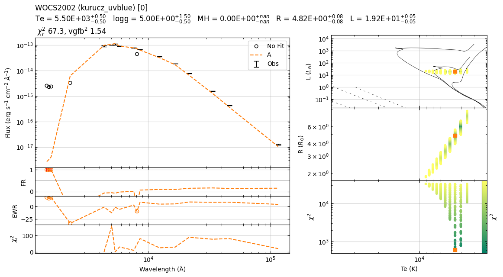

Example binary fit¶
Fitting method
Read data
Create
AcomponentFit
AcomponentCreate a residual star (
B)Fit
BcomponentPlot and save logs
Quick fit¶
import src.binary_sed_fitting as bsf
################################################################################
name = 'WOCS2002'
file_name = 'data/extinction_corrected_flux_files/%s.csv'%name
data = bsf.load_data(file_name, mode='csv')
distance = 831. # pc
e_distance = 11. # pc
################################################################################
model_name = 'kurucz'
limits = {'Te' : [3500, 9000],
'logg' : [ 3, 5],
'MH' : [ 0.0, 0.0],
'alpha': [ 0.0, 0.0]}
model_A = bsf.Model(model_name, limits=limits)
model_name = 'koester'
limits = {'Te' : [5000,80000],
'logg' : [ 6.5, 9.5]}
model_B = bsf.Model(model_name, limits=limits)
################################################################################
star_system = bsf.System(name=name,
distance=distance,
e_distance=e_distance,
data=data)
################################################################################
star_system.setup_A_component(model=model_A,
wavelength_range=[3000, 1_000_000_000],
r_limits='blackbody')
star_system.A.fit_chi2()
################################################################################
star_system.create_residual_star(component='B',
model=model_B,
wavelength_range=[0, 1_000_000_000],
r_limits=[0.001,1.0])
star_system.B.fit_chi2()
################################################################################
star_system.plot()
22:38:37 ----- WARNING ----- estimate_runtime
Calculating chi2: ETA ~ 0 s
22:38:38 ----- WARNING ----- get_parameters_from_chi2_minimization
Based on chi2, I recommend removal of following filters: ['KPNO/Mosaic.I']; chi2=[105.36663391]
22:38:38 ----- WARNING ----- estimate_runtime
Calculating chi2: ETA ~ 0 s
22:38:39 ----- WARNING ----- get_parameters_from_chi2_minimization
Based on chi2, I recommend removal of following filters: ['KPNO/Mosaic.I']; chi2=[105.83209209]
Recommended fitting routine¶
SystemSetting up the system using
data,filters_to_drop,nameetc.
setup_A_componentSet up the A component of the system.
Provide appropriate
model,wavelength_rangeandr_limits
create_residual_starCreate a residual star object for a specific component based on residual flux.
Provide appropriate
model,wavelength_rangeandr_limits
save_summarySave a summary of the current state of the instance to a CSV file.
Example 1¶
import src.binary_sed_fitting as bsf
import importlib
importlib.reload(bsf)
import warnings
warnings.filterwarnings("ignore")
bsf.console.setLevel(bsf.logging.WARNING)
################################################################################
name = 'WOCS2002'
file_name = 'data/extinction_corrected_flux_files/%s.csv'%name
data = bsf.load_data(file_name, mode='csv')
distance = 831. # pc
e_distance = 11. # pc
refit = False
run_name = '0'
################################################################################
model_name = 'kurucz'
limits = {'Te' : [3500, 9000],
'logg' : [ 3, 5],
'MH' : [ 0.0, 0.0],
'alpha': [ 0.0, 0.0]}
model_A = bsf.Model(model_name, limits=limits)
model_name = 'koester'
limits = {'Te' : [5000, 80000],
'logg' : [ 6.5, 9.5]}
model_B = bsf.Model(model_name, limits=limits)
################################################################################
star_system = bsf.System(name=name,
distance=distance,
e_distance=e_distance,
data=data,
run_name=run_name,
filters_to_drop=['KPNO/Mosaic.I'])
################################################################################
star_system.setup_A_component(model=model_A,
wavelength_range=[3000, 1_000_000_000],
r_limits='blackbody')
star_system.A.fit_chi2(refit=refit)
star_system.A.fit_noisy_chi2(refit=refit)
################################################################################
star_system.create_residual_star(component='B',
model=model_B,
wavelength_range=[0, 1_000_000_000],
r_limits=[0.001,1.0])
star_system.B.fit_chi2(refit=refit)
star_system.B.fit_noisy_chi2(refit=refit)
################################################################################
star_system.plot(add_noisy_seds=False,
FR_cutoff=0.5,
folder='plots/')
star_system.save_summary()
22:38:40 ----- WARNING ----- calculate_chi2
Give "refit=True" if you want to rerun the fitting process.
22:38:40 ----- WARNING ----- calculate_noisy_chi2
Give "refit=True" if you want to rerun the fitting process.
22:38:40 ----- WARNING ----- calculate_chi2
Give "refit=True" if you want to rerun the fitting process.
22:38:40 ----- WARNING ----- calculate_noisy_chi2
Give "refit=True" if you want to rerun the fitting process.
22:38:40 ----- WARNING ----- get_realistic_errors_from_iterations
logg_B : The best fit value is at upper limit of the model.
22:38:40 ----- WARNING ----- get_parameters_from_noisy_chi2_minimization
Te_B (14750) != Te_median_B (14500) : Proceed with caution!
Example 2¶
import src.binary_sed_fitting as bsf
import importlib
importlib.reload(bsf)
import warnings
warnings.filterwarnings("ignore")
bsf.console.setLevel(bsf.logging.INFO)
################################################################################
name = 'WOCS2002'
file_name = 'data/extinction_corrected_flux_files/%s.csv'%name
data = bsf.load_data(file_name, mode='csv')
distance = 831. # pc
e_distance = 11. # pc
refit = False
run_name = '0'
################################################################################
model_name = 'kurucz_uvblue'
limits = {'Te' : [3500, 9000],
'logg' : [ 3, 5],
'MH' : [ 0.0, 0.0]}
model_A = bsf.Model(model_name, limits=limits)
model_name = 'koester'
limits = {'Te' : [5000, 80000],
'logg' : [ 6.5, 9.5]}
model_B = bsf.Model(model_name, limits=limits)
################################################################################
star_system = bsf.System(name=name,
distance=distance,
e_distance=e_distance,
data=data,
run_name=run_name,
filters_to_drop=['KPNO/Mosaic.I'])
################################################################################
star_system.setup_A_component(model=model_A,
wavelength_range=[3000, 1_000_000_000],
r_limits='blackbody')
star_system.A.fit_chi2(refit=refit)
star_system.A.fit_noisy_chi2(refit=refit)
################################################################################
star_system.create_residual_star(component='B',
model=model_B,
wavelength_range=[0, 1_000_000_000],
r_limits=[0.001,1.0])
star_system.B.fit_chi2(refit=refit)
star_system.B.fit_noisy_chi2(refit=refit)
################################################################################
star_system.plot(add_noisy_seds=False,
FR_cutoff=0.5,
folder='plots/')
star_system.plot_public(add_noisy_seds=False,
median=False,
folder='plots/')
star_system.save_summary()
22:38:42 ----- INFO ----- __init__
==============================================================
--------------------------------------------------------------
------------ WOCS2002 Total ------------
--------------------------------------------------------------
==============================================================
22:38:42 ----- INFO ----- drop_filters
Fitted Not fitted
wavelength
1481.000000 Astrosat/UVIT.F148W
1541.000000 Astrosat/UVIT.F154W
1608.000000 Astrosat/UVIT.F169M
2303.366368 GALEX/GALEX.NUV
4357.276538 KPNO/Mosaic.B
5035.750275 GAIA/GAIA3.Gbp
5366.240786 KPNO/Mosaic.V
5822.388714 GAIA/GAIA3.G
7619.959993 GAIA/GAIA3.Grp
8101.609574 KPNO/Mosaic.I
8578.159519 GAIA/GAIA3.Grvs
12350.000000 2MASS/2MASS.J
16620.000000 2MASS/2MASS.H
21590.000000 2MASS/2MASS.Ks
33526.000000 WISE/WISE.W1
46028.000000 WISE/WISE.W2
115608.000000 WISE/WISE.W3
22:38:42 ----- INFO ----- drop_filters
Filters: used/all = 16/17
22:38:42 ----- INFO ----- blackbody
Fit parameters: T=5481 K, log_sf=-19.80
22:38:42 ----- INFO ----- __init__
==========================================================
----------------------------------------------------------
------------ WOCS2002 A ------------
----------------------------------------------------------
==========================================================
22:38:42 ----- INFO ----- drop_filters
Fitted Not fitted
wavelength
1481.000000 Astrosat/UVIT.F148W
1541.000000 Astrosat/UVIT.F154W
1608.000000 Astrosat/UVIT.F169M
2303.366368 GALEX/GALEX.NUV
4357.276538 KPNO/Mosaic.B
5035.750275 GAIA/GAIA3.Gbp
5366.240786 KPNO/Mosaic.V
5822.388714 GAIA/GAIA3.G
7619.959993 GAIA/GAIA3.Grp
8101.609574 KPNO/Mosaic.I
8578.159519 GAIA/GAIA3.Grvs
12350.000000 2MASS/2MASS.J
16620.000000 2MASS/2MASS.H
21590.000000 2MASS/2MASS.Ks
33526.000000 WISE/WISE.W1
46028.000000 WISE/WISE.W2
115608.000000 WISE/WISE.W3
22:38:42 ----- INFO ----- drop_filters
Filters: used/all = 12/17
22:38:42 ----- INFO ----- blackbody
Fit parameters: T=5141 K, log_sf=-19.68
22:38:42 ----- WARNING ----- calculate_chi2
Give "refit=True" if you want to rerun the fitting process.
22:38:42 ----- INFO ----- calculate_chi2
Te logg MH sf chi2 R L
0 5500 5.0 0.0 1.711324e-20 605.265396 4.821651 19.166195
1 5500 4.5 0.0 1.711324e-20 623.657636 4.821651 19.166195
2 5500 4.0 0.0 1.711324e-20 646.127812 4.821651 19.166195
3 5500 3.5 0.0 1.711324e-20 676.770282 4.821651 19.166195
4 5500 5.0 0.0 1.672370e-20 678.052247 4.766458 18.729919
22:38:42 ----- INFO ----- get_parameters_from_chi2_minimization
Te 5500
logg 5.0
MH 0.0
sf 1.711324325556752e-20
chi2 605.2653955671254
R 4.82165050410858
L 19.166194505023658
vgf2 282.64882836834505
vgfb2 13.823644873298194
22:38:42 ----- WARNING ----- calculate_noisy_chi2
Give "refit=True" if you want to rerun the fitting process.
22:38:42 ----- INFO ----- calculate_noisy_chi2
Te logg MH sf chi2 R L
0 5500 5.0 0.0 1.711324e-20 605.265396 4.821651 19.166195
1 5500 5.0 0.0 1.711324e-20 634.850577 4.821651 19.166195
2 5000 3.0 0.0 2.590194e-20 686.464538 5.931926 19.813680
3 5000 3.0 0.0 2.590194e-20 709.362561 5.931926 19.813680
4 5500 5.0 0.0 1.711324e-20 589.058094 4.821651 19.166195
22:38:42 ----- WARNING ----- get_realistic_errors_from_iterations
logg_A : The best fit value is at upper limit of the model.
22:38:42 ----- INFO ----- get_parameters_from_noisy_chi2_minimization
Te 5500(-500,+500)
logg 5.0(-0.5,+1.5)
MH 0.0(-nan,+nan)
sf 1.711324325556752e-20(-3.8954497495600517e-22,+3.9861864305066634e-22)
R 4.82165050410858(-0.08437909038270332,+0.08479851127218695)
L 19.166194505023658(-0.5074082781113363,+0.5074082781113363)
22:38:42 ----- INFO ----- __init__
==========================================================
----------------------------------------------------------
------------ WOCS2002 B ------------
----------------------------------------------------------
==========================================================
22:38:42 ----- INFO ----- drop_filters
Fitted Not fitted
wavelength
1481.000000 Astrosat/UVIT.F148W
1541.000000 Astrosat/UVIT.F154W
1608.000000 Astrosat/UVIT.F169M
2303.366368 GALEX/GALEX.NUV
4357.276538 KPNO/Mosaic.B
5035.750275 GAIA/GAIA3.Gbp
5366.240786 KPNO/Mosaic.V
5822.388714 GAIA/GAIA3.G
7619.959993 GAIA/GAIA3.Grp
8101.609574 KPNO/Mosaic.I
8578.159519 GAIA/GAIA3.Grvs
12350.000000 2MASS/2MASS.J
16620.000000 2MASS/2MASS.H
21590.000000 2MASS/2MASS.Ks
33526.000000 WISE/WISE.W1
46028.000000 WISE/WISE.W2
115608.000000 WISE/WISE.W3
22:38:42 ----- INFO ----- drop_filters
Filters: used/all = 16/17
22:38:42 ----- WARNING ----- calculate_chi2
Give "refit=True" if you want to rerun the fitting process.
22:38:42 ----- INFO ----- calculate_chi2
Te logg sf chi2 R L
0 14750 9.50 1.725603e-24 159.136099 0.048417 0.099968
1 14500 9.50 1.936158e-24 159.688382 0.051286 0.104753
2 14750 9.50 1.686323e-24 159.715246 0.047863 0.097693
3 14250 9.25 2.074631e-24 159.719559 0.053088 0.104702
4 14750 9.50 1.765797e-24 159.917486 0.048978 0.102297
22:38:42 ----- INFO ----- get_parameters_from_chi2_minimization
Te 14750
logg 9.5
sf 1.725602926800466e-24
chi2 159.1360992132397
R 0.0484172367584393
L 0.0999681740205916
vgf2 16192.80239982421
vgfb2 672.1329778172649
22:38:42 ----- WARNING ----- get_parameters_from_chi2_minimization
Based on chi2, I recommend removal of following filters: ['GALEX/GALEX.NUV']; chi2=[2582.21594585]
22:38:42 ----- WARNING ----- calculate_noisy_chi2
Give "refit=True" if you want to rerun the fitting process.
22:38:42 ----- INFO ----- calculate_noisy_chi2
Te logg sf chi2 R L
0 14750 9.5 1.711296e-24 53.365138 0.048216 0.099139
1 12250 6.5 4.298581e-24 44.951984 0.076417 0.118474
2 12750 6.5 3.336761e-24 49.212097 0.067327 0.107924
3 12500 6.5 3.831114e-24 123.782329 0.072143 0.114477
4 14500 9.5 2.010597e-24 70.323409 0.052263 0.108780
22:38:42 ----- WARNING ----- get_realistic_errors_from_iterations
logg_B : The best fit value is at upper limit of the model.
22:38:42 ----- INFO ----- get_parameters_from_noisy_chi2_minimization
Te 14500(-2250,+250)
logg 9.5(-3.0,+9.0)
sf 2.0105973269348542e-24(-2.5944026111161197e-25,+2.490569410023769e-24)
R 0.0522627329169851(-0.0035562507625431536,+0.025943856852901688)
L 0.1063040765904966(-0.0037593403431278997,+0.006074533596405204)
22:38:42 ----- WARNING ----- get_parameters_from_noisy_chi2_minimization
Te_B (14750) != Te_median_B (14500) : Proceed with caution!
22:38:44 ----- INFO ----- save_summary
Saving log in data/log_starsystem_fitting.csv
Advance options¶
Each component in a System can be accessed and processed as a seperate Star
3rd component can be fitted by creating a residual star after fitting A and B components.
Potentially, any number of components can be fitted. But none of the plotting functions are designed to deal with more than 3.
System.TotalStarobject representing the total fitted flux.
star_system.A.plot()
print(star_system.Total.data_all.head())
wavelength flux error error_fraction FilterID
Astrosat/UVIT.F148W 1481.000000 2.548070e-15 1.361179e-16 0.053420
Astrosat/UVIT.F154W 1541.000000 2.285731e-15 1.368403e-16 0.059867
Astrosat/UVIT.F169M 1608.000000 2.360782e-15 1.261129e-16 0.053420
GALEX/GALEX.NUV 2303.366368 3.296702e-15 8.677147e-17 0.026321
KPNO/Mosaic.B 4357.276538 9.309407e-14 6.130611e-15 0.065854
error_2percent error_10percent log_wavelength FilterID
Astrosat/UVIT.F148W 1.361179e-16 2.548070e-16 3.170555
Astrosat/UVIT.F154W 1.368403e-16 2.285731e-16 3.187803
Astrosat/UVIT.F169M 1.261129e-16 2.360782e-16 3.206286
GALEX/GALEX.NUV 8.677147e-17 3.296702e-16 3.362363
KPNO/Mosaic.B 6.130611e-15 9.309407e-15 3.639215
log_flux e_log_flux fitted model_flux FilterID
Astrosat/UVIT.F148W -14.593789 0.023200 True 2.173278e-15
Astrosat/UVIT.F154W -14.640975 0.026000 True 2.444154e-15
Astrosat/UVIT.F169M -14.626944 0.023200 True 2.579711e-15
GALEX/GALEX.NUV -14.481920 0.011431 True 7.706038e-15
KPNO/Mosaic.B -13.031078 0.028600 True 9.911352e-14
residual_flux fractional_residual ewr FilterID
Astrosat/UVIT.F148W 3.747922e-16 0.147089 2.753439
Astrosat/UVIT.F154W -1.584237e-16 -0.069310 -1.157727
Astrosat/UVIT.F169M -2.189290e-16 -0.092736 -1.735976
GALEX/GALEX.NUV -4.409336e-15 -1.337499 -50.815509
KPNO/Mosaic.B -6.019451e-15 -0.064660 -0.981868
chi2_i vgf2_i vgfb2_i
FilterID
Astrosat/UVIT.F148W 7.581426 7.581426 2.163507
Astrosat/UVIT.F154W 1.340331 1.340331 0.480386
Astrosat/UVIT.F169M 3.013612 3.013612 0.859993
GALEX/GALEX.NUV 2582.215946 2582.215946 178.890421
KPNO/Mosaic.B 0.964065 0.964065 0.418090
